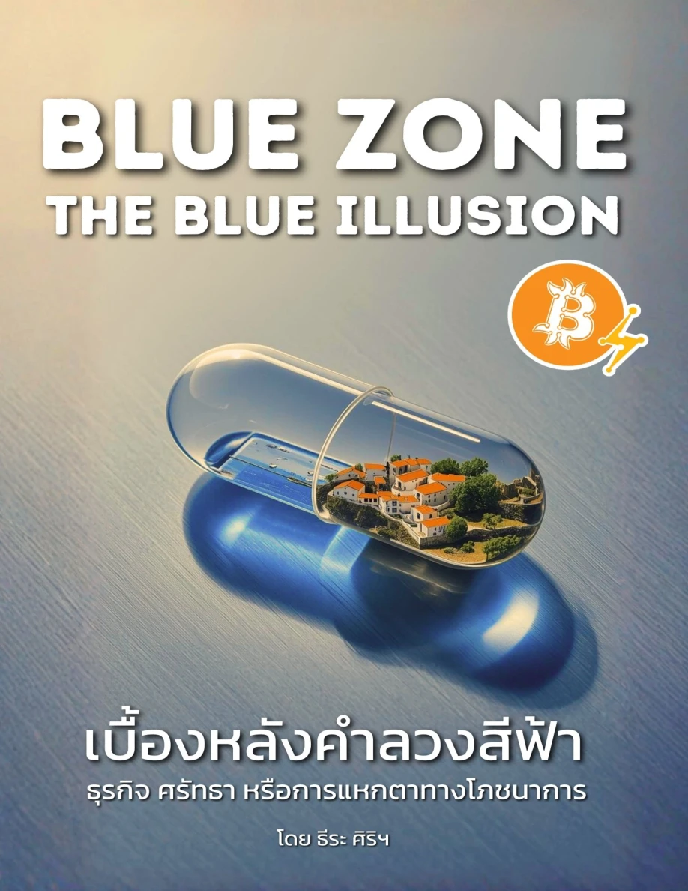

ธีระ ศิริพลับพลาพร · ฉบับสรุปภาษาไทย

The Blue Illusion
จากรอยหมึกสีน้ำเงิน
สู่คำถามต่อธุรกิจแห่งความอายุยืน
เนื้อหาสรุปครบ 16 บท + บทพิเศษ
เรียบเรียงเพื่ออ่านทำความเข้าใจ พร้อมข้อสังเกตแยกจากต้นฉบับ
ธีระ ศิริพลับพลาพร · ฉบับสรุปภาษาไทย

จากรอยหมึกสีน้ำเงิน
สู่คำถามต่อธุรกิจแห่งความอายุยืน
เรียบเรียงเพื่ออ่านทำความเข้าใจ พร้อมข้อสังเกตแยกจากต้นฉบับ